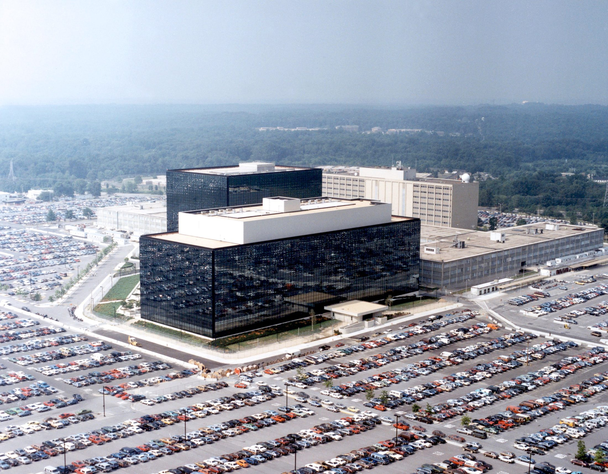

Central Questions
- What is privacy, and why does it matter — both instrumentally and intrinsically?
- Do we have a "right" to privacy? If so, where does it come from?
- How has information technology transformed privacy across history?
- When, if ever, is surveillance justified — and who should decide?
- Is privacy a universal human value, or is it culturally contingent?
Part I: Understanding Privacy
Privacy is one of those concepts that feels obvious until you try to define it. Ask anyone whether they value privacy and they will say yes — yet people constantly trade personal information for convenience, share intimate details on social media, and tolerate forms of monitoring they would once have found intolerable. Understanding privacy's philosophical foundations is the first step toward thinking clearly about one of the most contested issues in technology ethics.
Privacy proves surprisingly difficult to pin down. Early legal formulations were blunt but powerful. In 1890, American lawyers Samuel Warren and Louis Brandeis — alarmed by new cameras and sensational newspapers — published what many consider the founding document of modern privacy law. Their central phrase captured an intuition most people share: the right "to be let alone." Yet this phrase, as elegant as it is, quickly runs into trouble. Does it mean no one can photograph you in public? That employers can't ask about your health? That the government can't monitor your phone calls? The phrase alone cannot answer these questions.
Privacy (Contextual Integrity)
Philosopher Helen Nissenbaum's influential account holds that privacy is not simply about secrecy — it is about appropriate information flows. A privacy violation occurs when information moves to a context where it doesn't belong: your medical records flowing to your employer, your private messages shared with strangers, or your location data sold to advertisers.
Nissenbaum's framework helps explain why the same information can feel private in one context and perfectly fine in another. You might happily tell your doctor that you take medication for anxiety — but feel deeply violated if that same fact appeared in your personnel file. The information hasn't changed; the context has. This is why simple definitions of privacy as "control over personal information" or "keeping secrets" miss something important. What matters is the norm governing a particular social context, and whether information flows respect or violate that norm.
Types of Privacy
Privacy is not a single thing but a family of related interests. Scholars distinguish several distinct dimensions, each of which may require different protections and raise different ethical questions.
| Type | What It Protects | Example Violation |
|---|---|---|
| Informational | Control over personal data | A data breach exposing medical records |
| Physical/Spatial | Freedom from bodily intrusion or location tracking | A warrantless search of your home |
| Decisional | Autonomy over personal choices | Government mandating reproductive decisions |
| Communications | Private correspondence | Wiretapping phone calls or reading email |
| Associational | Freedom to associate privately | Compelled disclosure of group membership |
| Intellectual | Private thoughts and beliefs | Compelled speech or thought monitoring |
These categories are not watertight — a facial recognition camera in your neighborhood potentially threatens physical, associational, and communicational privacy simultaneously. But the taxonomy is useful precisely because different violations call for different remedies. A law protecting financial records from hackers is a different tool from a constitutional rule requiring warrants for home searches.
Why Privacy Matters: Instrumental Arguments
The strongest case for privacy is often made on instrumental grounds: privacy serves other goods we already care about. Even someone skeptical of privacy as an end in itself should be moved by what privacy makes possible.
Supporting argument
Privacy provides space for autonomy — room to develop our identities without external pressure. It creates the conditions for intimacy, since meaningful relationships are built through selective sharing. Democratic processes depend on privacy: anonymous ballots, confidential sources, and dissent require protection from retaliation. Privacy guards against security threats like identity theft and stalking. And it helps maintain power balance — asymmetric surveillance, where the powerful watch the powerless without reciprocity, is a recipe for abuse.
"Arguing that you don't care about privacy because you have nothing to hide is like arguing you don't care about free speech because you have nothing to say."
— Edward Snowden
Snowden's quip — pithy but philosophically serious — highlights a structural error in the "nothing to hide" argument. Rights protect categories of action, not just the specific uses we happen to have for them right now. You need not currently be planning to speak dangerously to value free speech. You need not currently be hiding anything shameful to value privacy. The value of the right lies partly in protecting possibilities — including possibilities that may never be exercised.
Why Privacy Matters: Intrinsic Arguments
Beyond what privacy enables, many philosophers argue it has intrinsic value — worth protecting regardless of its consequences. This claim takes several forms. Being observed without consent, on this view, is intrinsically degrading: it treats you as an object of scrutiny rather than a subject with your own perspective. Privacy also constitutes the self in a deeper sense. Who we are is partly defined by the boundaries we maintain between ourselves and the world. A person with no private self at all — no thoughts, spaces, or relationships insulated from external view — would be a diminished kind of person.
Key Thinker
James Rachels (1941–2003)
James Rachels was an American philosopher who taught at the University of Alabama at Birmingham. He was best known for his work on euthanasia and moral theory, but his 1975 essay "Why Privacy Is Important" remains one of the clearest and most influential philosophical defenses of privacy as a moral value.
Rachels argued that privacy enables us to maintain different relationships with different people — and that this differentiation is not hypocrisy but rather the very structure of social life. You share things with your doctor that you don't share with your employer; things with a close friend that you don't share with a casual acquaintance. These different relationships have different norms, and privacy is what makes them possible. Surveillance that collapses these distinctions — making everything visible to everyone — undermines the relational texture of human life.
Rachels's insight anticipates Nissenbaum's contextual integrity framework by two decades. Together they suggest that privacy is less about keeping secrets than about maintaining the social norms that make diverse, meaningful relationships possible.
Legal Foundations of Privacy
Legal protections for privacy vary dramatically around the world, reflecting different cultural traditions and political histories. The United States and the European Union represent two contrasting approaches that have become models — and rivals — in global privacy policy.
The US approach is sectoral: instead of one comprehensive privacy law, there is a patchwork of sector-specific rules. The Fourth Amendment protects against unreasonable government searches. Griswold v. Connecticut (1965) established a constitutional right to privacy in intimate decisions by reading it from the "penumbras" of other rights. Katz v. United States (1967) introduced the "reasonable expectation of privacy" standard still used today. Sector-specific laws include HIPAA (health data), GLBA (financial data), COPPA (children's data online), and FERPA (educational records). But there is a fundamental gap: no comprehensive federal privacy law governs the general collection and use of personal data by private companies.
| Jurisdiction | Approach | Key Law | Maximum Penalty |
|---|---|---|---|
| European Union | Comprehensive fundamental right | GDPR (2018) | 4% of global annual revenue |
| United States | Sectoral, patchwork | HIPAA, FERPA, COPPA, etc. | Varies by sector |
| China | State control priority | PIPL (2021) | 5% of annual revenue |
| California (USA) | Consumer rights model | CCPA/CPRA | $7,500 per intentional violation |
The EU's General Data Protection Regulation, which took effect in 2018, represents the most ambitious attempt yet to codify privacy as a comprehensive legal right. Its key principles include: consent requirements before collecting data, the right to access your own data, the right to erasure ("right to be forgotten"), data portability, and strict limits on what data can be collected and how long it can be kept. The largest GDPR fine to date — €1.2 billion levied against Meta in 2023 for illegal data transfers — illustrates both the law's teeth and the scale of the violations it is designed to deter.
Philosophical Theories of Privacy Rights
Where does a right to privacy come from? Different philosophical traditions give different answers, and understanding them helps clarify what is really at stake in privacy debates.
What's the Argument?
Thomson's Reductionist Challenge to Privacy
- Every privacy violation can be redescribed as a violation of property rights (entering your home without permission) or bodily rights (touching you without consent).
- If privacy violations are always also violations of these other rights, then "privacy" as a distinct right adds nothing new to our moral framework.
- Simpler frameworks should be preferred over more complex ones (Occam's Razor).
Judith Jarvis Thomson's reductionist argument was philosophically bold but has not convinced most scholars. The key counterexample: a photographer with a telephoto lens takes your photo through your window from public property. No property right is violated — she is on public ground. No bodily right is violated — she never touches you. Yet most people have the intuition that a genuine privacy violation has occurred. Surveillance cameras, data aggregation, and location tracking all fall into this category of cases Thomson's framework cannot handle.
Objection
Richard Posner offered a different skeptical argument: privacy is often economically inefficient because it lets people hide information others have legitimate interests in knowing. Efficient markets require accurate information; privacy distorts them. But this view treats people purely as economic actors and ignores power imbalances — employers learn enormous amounts about workers while workers learn little about employers. Privacy can correct market failures by preventing employers, insurers, and lenders from discriminating based on irrelevant personal characteristics.
The Privacy Paradox
One of the most puzzling findings in privacy research is what scholars call the privacy paradox: people consistently say they care about privacy in surveys, yet in practice readily trade personal data for small conveniences — free apps, faster checkout, personalized recommendations. Is this hypocrisy? Irrationality? Or something more structurally interesting?
The Privacy Paradox
The observed gap between individuals' stated privacy preferences (high concern) and their actual behavior (frequent disclosure). Researchers debate whether this reflects bounded rationality, temporal discounting, resigned fatalism about data collection, or simply the absence of real alternatives.
Several explanations have been proposed. Bounded rationality: privacy decisions involve complex tradeoffs between diffuse future harms and immediate benefits, and human cognition is not built to evaluate these reliably. Temporal discounting: we instinctively weight near-term rewards more heavily than abstract future harms, even when the future harm is objectively larger. Resignation: many people report feeling that "privacy is dead anyway" — that data collection is so pervasive that individual resistance is futile. And often there simply is no real alternative: to use the service you need, you must accept the terms. When "consent" is the price of participation in modern digital life, calling it genuine consent stretches the word past recognition.
Research has documented just how small a reward is enough to overcome stated privacy preferences. For example, a Carnegie Mellon study found that users would share their purchase history with a website in exchange for discounts as small as a few cents on a $15 product — a trade most said in principle they would never make. Loyalty programs at grocery stores, pharmacies, and coffee chains collect detailed purchase histories in exchange for modest discounts, and hundreds of millions of people have enrolled without meaningful reflection. A 2023 report found that the average American has accepted over 1,500 different terms-of-service agreements — documents that, read consecutively, would take weeks. The privacy paradox is less a paradox than a description of what happens when real alternatives are systematically absent.
Thought Questions
- Helen Nissenbaum argues privacy is about appropriate information flows, not secrets. Can you think of an example from your own life where information flowed to an "inappropriate" context — and why it felt like a violation even though nothing was strictly secret?
- Thomson argues there is no distinct right to privacy — just property and bodily rights. Do you find the telephoto lens counterexample compelling? Can you think of your own counterexample to Thomson's view?
- Does the privacy paradox show that people don't really value privacy — or does it show something else? What would genuine privacy-respecting design look like?
- GDPR gives Europeans the "right to be forgotten." Should the US adopt a similar right? What would be the strongest argument against it?
Part II: A History of IT and Privacy
Privacy debates did not begin with the internet. Each major information technology revolution has triggered its own version of the same argument — between those who see surveillance as a necessary tool of security and order, and those who see it as a threat to freedom and dignity. Understanding this history reveals patterns that are still playing out today.
Pre-Digital Privacy Concerns
The first systematic legal argument for privacy as an individual right came in 1890, when Boston lawyers Samuel Warren and Louis Brandeis published "The Right to Privacy" in the Harvard Law Review. Their immediate target was invasive new photography technology and the sensationalist newspaper journalism it enabled. A photographer could now capture your image in public and publish it without your knowledge or consent. Warren and Brandeis argued this violated something fundamental about individual autonomy — the right to control how you present yourself to the world.
Their intervention resonated far beyond its immediate context. Throughout the twentieth century, each new communications technology spawned a new privacy battle. The telephone raised the wiretapping question; Louis Brandeis (now on the Supreme Court) wrote a famous dissent in Olmstead v. United States (1928), arguing that wiretapping violated the Fourth Amendment even without physical trespass. His view lost then but won forty years later in Katz v. United States (1967). George Orwell's 1984 (1949) gave the concept of the totalitarian surveillance state its most vivid literary expression — and its enduring vocabulary of Big Brother, doublethink, and the telescreen.
The Computer Revolution and the Fair Information Principles
The development of government databases in the 1960s triggered the first wave of modern privacy legislation. When Social Security numbers became a de facto national identifier and federal agencies began building large computer databases on citizens, Congress and the executive branch scrambled to create oversight frameworks. The result was a series of foundational laws and principles.
The most influential product of this era was not a law but a framework. The 1973 Department of Health, Education, and Welfare report on data systems articulated what it called Fair Information Practice Principles (FIPPs): Notice (people should know data is being collected), Choice (people should be able to consent or opt out), Access (people should be able to see their own data), Security (data should be protected), and Enforcement (violations should have consequences). These five principles became the conceptual foundation for privacy regulation in the US, Europe, and internationally. The GDPR, written four decades later, is essentially FIPPs with real enforcement mechanisms.
The Internet Age and Post-9/11 Surveillance
The World Wide Web, launched publicly in 1991, transformed both the scale and the commercial logic of data collection. Cookies, web tracking, and behavioral advertising emerged as mechanisms for building detailed profiles of individual users. The EU responded with its 1995 Data Protection Directive — a comprehensive framework that would eventually evolve into the GDPR. The US responded more cautiously, adding sectoral protections (COPPA for children in 1998, GLBA for financial data in 1999) while leaving commercial surveillance largely unregulated.
The September 11, 2001 attacks produced the most dramatic peacetime expansion of US surveillance in history. The USA PATRIOT Act, passed six weeks after the attacks, expanded government surveillance powers in sweeping ways. Section 215 allowed bulk collection of phone metadata — not just calls to or from suspected terrorists, but records of all phone calls made by all Americans. National Security Letters could compel businesses to turn over customer records without any judicial oversight. The FISA court, created in 1978 to authorize targeted intelligence surveillance with judicial oversight, was now routinely approving programs that were anything but targeted.
The Social Media Era and Surveillance Capitalism
Facebook launched in 2004, Twitter in 2006, and the iPhone in 2007. Within a decade, the majority of Americans carried a device that tracked their location continuously, recorded their communications, and uploaded their social connections, interests, purchases, and daily routines to corporate servers. The dominant business model — free services funded by targeted advertising — created powerful incentives to collect as much data as possible and to make users as engaging (and therefore as traceable) as possible.
Key Thinker
Shoshana Zuboff (1951–present)
Shoshana Zuboff is Professor Emerita at Harvard Business School and the author of The Age of Surveillance Capitalism (2019), one of the most influential critiques of the tech industry's data practices. Her analysis goes beyond privacy to argue that surveillance capitalism represents a fundamentally new economic logic — one that commodifies human experience itself.
Zuboff's framework identifies a five-step process: (1) human experience is treated as raw material for data extraction; (2) most of this data is behavioral surplus — more than needed to improve the service, repurposed to predict user behavior; (3) these prediction products are sold to advertising customers; (4) to improve prediction accuracy, companies invest in behavioral modification — nudging users toward outcomes that generate more data and more engagement; and (5) this creates a new form of instrumentarian power — the ability to shape human behavior at scale.
The key insight: surveillance capitalism is not just about knowing what you do. It is about shaping what you do. The goal is not merely to predict behavior but to change it in ways that serve the platform's commercial interests — a fundamentally new kind of power that operates largely below the threshold of awareness.
Case Study
Cambridge Analytica and the 87 Million Profiles (2018)
In March 2018, journalists revealed that Cambridge Analytica, a political consulting firm, had harvested the personal data of approximately 87 million Facebook users — without their knowledge or meaningful consent. The mechanism was a personality quiz app called "This Is Your Digital Life," which collected data not only from the people who took the quiz but from their entire Facebook friend networks, exploiting an API feature Facebook had made available to developers.
Cambridge Analytica used this data to build psychographic profiles — personality models designed to identify voters' psychological vulnerabilities and target them with tailored political advertisements. The firm claimed to have worked on the Brexit referendum campaign and the 2016 US presidential election. Whether its methods actually influenced election outcomes remains contested, but the scandal illustrated something that had been largely hidden: the scale and promiscuity of Facebook's data sharing practices, and the ease with which personal data could be repurposed for political manipulation.
The consequences were significant. Mark Zuckerberg was summoned before Congress for two days of hearings. The FTC levied a $5 billion fine against Facebook — the largest ever US privacy penalty at the time. The scandal accelerated implementation of GDPR, which had been adopted in 2016 and took effect in May 2018, just weeks after the Cambridge Analytica story broke. The episode became a shorthand for the risks of treating personal data as a freely transferable commodity.
Case Study
The Snowden Revelations (2013)
On June 5, 2013, The Guardian published the first of what would become a series of stories based on classified documents leaked by Edward Snowden, an NSA contractor. What followed was the most significant public disclosure of US government surveillance operations in history. Snowden revealed programs with code names that have since entered public consciousness: PRISM (which gave the NSA direct access to data from tech company servers including Google, Facebook, and Apple), Upstream collection (tapping of fiber optic cables carrying internet traffic), bulk collection of phone metadata under Section 215, and XKeyscore (described internally as collecting "nearly everything a user does on the Internet").
The revelations triggered a global debate. Civil liberties organizations celebrated Snowden as a whistleblower; the US government charged him with espionage. Other governments — many of whose leaders were revealed to have been surveilled themselves, including German Chancellor Angela Merkel — expressed outrage. The disclosures directly led to the USA FREEDOM Act (2015), which ended bulk phone metadata collection, and to a significant increase in the adoption of encryption by technology companies.
Snowden received asylum in Russia and was granted Russian citizenship in 2022. The debate about his moral status — hero or traitor, whistleblower or criminal — has never been fully resolved, and it surfaces a deeper question: are the mechanisms for democratic oversight of intelligence agencies adequate to prevent the kind of overreach he exposed?
The Right to Be Forgotten
One of the most significant developments in digital privacy law emerged from a seemingly mundane complaint. In 2010, Spanish citizen Mario Costeja González asked Google to remove links to an old newspaper article about debt problems from 1998 — problems that had long since been resolved. Google refused. González complained to Spain's data protection authority. In 2014, the European Court of Justice ruled that individuals have the right to request removal of "inadequate, irrelevant, or no longer relevant" information from search results. The ruling was incorporated into GDPR Article 17 as the "right to erasure."
Since 2014, Google has received more than two million removal requests. The case illustrates a genuine tension in privacy law: privacy versus free speech. Permitting people to "erase" past events from search results conflicts with the public's interest in accurate historical information and with press freedom. The EU and US take fundamentally different approaches here: European courts have generally been more willing to balance privacy against other rights and find in privacy's favor; US courts treat the First Amendment's protection of information as close to absolute. Neither approach fully resolves the underlying tension.
Part IV: Surveillance Debates in Liberal Democracies
Liberal democracies face a distinctive challenge with surveillance. The authoritarian cases reviewed above involve relatively clear moral failures — systems designed to suppress political dissent. But what about surveillance in societies with free elections, independent courts, and constitutional rights? Here the analysis is genuinely harder. Governments have legitimate interests in preventing terrorism, solving crimes, and protecting public safety. The question is whether surveillance serves these interests — and whether it does so at acceptable cost to the freedoms that make democratic life worth living.
The Core Tension: Security vs. Liberty — or Something Else?
The standard framing of surveillance debates pits security against liberty, as if more of one necessarily means less of the other. But this framing is contested. Privacy advocates argue it presents a false dichotomy: privacy itself is a component of security, protecting individuals against abuse of power by governments, employers, and private actors. The choice, on this view, is not between security and liberty but between different accounts of what security means and who it protects.
"Too many wrongly characterize the debate as 'security versus privacy.' The real choice is liberty versus control."
— Bruce Schneier,
The Case for Surveillance
Proponents of surveillance argue that it is necessary for security and public safety. Let's examine one of the central arguments carefully.
What's the Argument?
The Deterrence Argument for Surveillance
- Deterring crime protects public safety — and protecting public safety is a legitimate, core government interest.
- Surveillance deters crime: people are less likely to commit crimes when they know they are being watched.
- Therefore, if surveillance deters crime, and deterring crime is a legitimate government interest, then surveillance is justified.
Objection
Premise 2 is empirically weak. Studies on the deterrence effects of CCTV cameras are mixed. A 2019 meta-analysis found cameras reduced vehicle crime in parking lots but showed "no significant effect" on violent crime. Determined criminals adapt to surveillance rather than being deterred by it. Premise 3 assumes proportionality: even if surveillance provides some benefit, the argument doesn't establish that the benefit outweighs the costs — chilling effects on speech and assembly, potential for mission creep, abuse by future governments, and the corrosive effect on trust between citizens and state.
The Case Against Surveillance
Critics of mass surveillance argue it threatens not just privacy but the very conditions of free political life.
What's the Argument?
The Chilling Effects Argument Against Surveillance
- A free society requires that citizens be able to speak, associate, and explore ideas without fear of punishment or retaliation.
- When people know they are (or believe they might be) watched, they self-censor — avoiding controversial speech, associations, and searches, even perfectly legal ones. (This is the "chilling effect.")
- Mass surveillance means people are — or reasonably believe they are — always potentially watched.
Supporting argument
Post-Snowden studies found measurable decreases in searches for terrorism-related terms following the revelations — suggesting people were self-censoring even when conducting legitimate research. If innocent people are deterred from legally exploring controversial topics because they fear being flagged as suspicious, the aggregate effect on intellectual life and political discourse could be substantial. The chilling effect is not hypothetical: it has been empirically documented. A 2015 PEN America survey found that 28% of American writers had avoided writing or speaking about certain topics because of surveillance concerns, and 24% had deliberately avoided discussing certain subjects by phone or email. A study of Wikipedia traffic by Jon Penney found significant drops in visits to terrorism-related articles after the Snowden revelations — not because interest in those topics declined, but because people feared being monitored. Searches for terms like "anthrax," "dirty bomb," and "pressure cooker" — relevant to students, journalists, and fiction writers — all declined. Surveillance changes behavior even when no one is actually watching and no one does anything wrong.
The "Nothing to Hide" Argument — Examined
The most common defense of surveillance in everyday conversation is the "nothing to hide" argument. If you're not doing anything wrong, the reasoning goes, you have nothing to fear from being watched. This argument is intuitively appealing but philosophically weak.
What's the Argument?
The "Nothing to Hide" Argument
- Surveillance only harms people who have something to hide.
- Law-abiding citizens have nothing to hide.
- Therefore, law-abiding citizens are not harmed by surveillance.
Objection
Premise 1 is false: surveillance harms through chilling effects, power imbalances, errors (wrongful identification), mission creep, and the potential for abuse — none of which require the target to have done anything wrong. Premise 2 conflates privacy with guilt: everyone has things they prefer to keep private — legal medical information, political views, relationship details, financial struggles. "Nothing to hide" treats privacy as only relevant to wrongdoers. The aggregation problem (Daniel Solove ): data points that are individually innocuous can combine into sensitive profiles that reveal far more than any single item would suggest. Laws change: today's legal behavior may be criminalized by future governments — a real concern in authoritarian transitions. For instance, being gay was a criminal offense in Britain until 1967 (Alan Turing was prosecuted for it in 1952) and in many US states until the Supreme Court's 2003 Lawrence v. Texas ruling. Abortion was a federally protected right until 2022. Interracial marriage was illegal in sixteen states until 1967. People who were "law-abiding" under one legal regime have become criminals under another. Data collected today about perfectly legal behavior — healthcare choices, political associations, religious practice — can become evidence against people under future governments with different definitions of what is permitted.
Facial Recognition and Predictive Policing
Two surveillance technologies have become particularly contested in democratic societies: facial recognition and predictive policing. Both promise significant benefits to law enforcement. Both raise profound concerns about accuracy, bias, and accountability.
Case Study
Clearview AI: The Facial Recognition Database
Clearview AI is a technology company that built a facial recognition product by scraping more than 30 billion photos from social media platforms and public websites. Its product allows law enforcement to identify virtually any person from a photograph — a capability that had previously been limited to government intelligence agencies. By 2020, more than 2,400 law enforcement agencies in the United States were using Clearview, often without any official authorization from their departments or oversight from prosecutors or courts.
The legal and regulatory response was swift in some jurisdictions. Clearview was sued by the ACLU and settled with an agreement banning sales to private businesses. Regulators in the Netherlands (€30.5M fine), Italy (€20M), and the UK (£7.5M) found the company had violated their data protection laws. Australia and Canada banned its use. In the United States, where no federal privacy law governs such systems, the company's CEO argued it had a First Amendment right to collect publicly available photographs.
The Clearview case crystallizes a broader debate. Facial recognition in public spaces potentially eliminates anonymity in public life — the ability to walk down a street without being identified, which has historically been assumed as a background condition of free movement. Once a government or company can identify any face in any camera footage, the practical distinction between private and public action largely collapses. Facial recognition also has documented accuracy disparities: error rates are significantly higher for darker skin tones and women, raising serious concerns about wrongful identification.

Predictive policing raises similar concerns in a different register. Place-based systems (like PredPol) use historical crime data to predict where crime is likely to occur. Person-based systems predict which individuals are likely to commit or become victims of crimes. Both types face a fundamental problem: if police deploy more resources to predicted hotspots, they make more arrests there, which feeds more data back into the model, which predicts even more crime in those areas — a feedback loop that encodes and amplifies existing patterns of enforcement, including any racial or socioeconomic biases built into historical data. The Los Angeles Police Department terminated its use of PredPol in 2020 following investigations into its disparate impact on communities of color.
Frameworks for Democratic Surveillance
If the question is not whether surveillance is ever legitimate — most people accept that it is, under appropriate conditions — but when and under what constraints, what principles should govern it? Scholars and policymakers have converged on several requirements for surveillance to be compatible with democratic governance.
| Principle | What It Requires | Why It Matters |
|---|---|---|
| Judicial oversight | Warrants required for targeted surveillance | Prevents executive branch self-authorization |
| Transparency | Public must know what surveillance systems exist | Democratic accountability requires knowledge |
| Purpose limitation | Data collected for one purpose cannot be repurposed | Prevents mission creep |
| Minimization | Collect only what is necessary for the stated purpose | Limits collateral privacy harms |
| Retention limits | Data must be deleted after a defined period | Reduces future abuse potential |
| Audit trails | Record who accesses what data, when | Detects and deters misuse |
| Accountability | Real consequences for unauthorized access or misuse | Enforcement without consequences is theater |
| Sunset clauses | Surveillance programs expire without reauthorization | Prevents permanent emergency powers |
These principles do not resolve every case — they provide a framework for evaluating specific proposals. Notice that the post-9/11 NSA programs revealed by Snowden violated most of them: bulk collection exceeded minimization requirements; the FISA court operated in secret, compromising transparency; programs expanded beyond their original authorization without congressional reauthorization. The same analysis can be applied to facial recognition deployments, workplace monitoring systems, or data broker practices.
Finally, it is worth noting that surveillance "tensions" — individual versus collective, present versus future, transparency versus privacy, innovation versus protection — cannot be permanently resolved. They must be navigated continuously, case by case, in light of specific technologies, specific threats, and specific political contexts. The goal of democratic oversight is not to reach a final answer but to ensure the process of navigation remains accountable, transparent, and subject to revision.
Thought Questions
- The "nothing to hide" argument is widely used in everyday conversation. After reading this chapter's analysis of its weaknesses, how would you respond to a friend who made this argument to defend a new government surveillance program?
- China's Social Credit System is often described in Western media as dystopian. But credit scores, insurance risk ratings, and employee monitoring all apply similar logic in Western societies. Is the difference one of degree, kind, or context? What makes one more acceptable than the other?
- Foucault argued that the panopticon's power lies in people regulating themselves. To what extent do social media platforms create a voluntary panopticon? Does your behavior online change because you know your posts are public or potentially monitored?
- The eight principles of democratic surveillance listed above are mostly procedural — they tell us how surveillance should be governed, not whether specific technologies should be permitted at all. Are there surveillance technologies that should be prohibited categorically, regardless of procedural safeguards? What would your criteria be?
Summary
This chapter has traced privacy from its philosophical foundations through its historical transformation by successive waves of information technology, to the concrete challenges posed today by surveillance capitalism, authoritarian states, and democratic governments navigating the genuine tension between security and liberty. Privacy is neither a simple right nor a minor interest: it is a condition for autonomy, intimacy, democracy, and the very possibility of being a self. The technologies that threaten it are powerful, pervasive, and mostly invisible — operating at scales and speeds that exceed human oversight. The frameworks reviewed here — contextual integrity, Fair Information Principles, GDPR, democratic surveillance principles — are imperfect but important tools for preserving something worth preserving.
Key Points
- Contextual integrity (Helen Nissenbaum): Privacy is not about secrecy but about appropriate information flows. A violation occurs when information moves to a context where it does not belong — medical records to employers, private messages to strangers, location data to advertisers.
- Instrumental arguments for privacy hold that it serves autonomy, intimacy, democracy, security, and power balance. Even someone skeptical of privacy as an end in itself should value what privacy makes possible.
- Warren and Brandeis (1890) coined the phrase "the right to be let alone," launching the modern legal concept of privacy in response to invasive photography and tabloid journalism — a pattern (new technology, new privacy threat, new legal response) that has repeated across every subsequent information revolution.
- The US approach is sectoral (HIPAA, FERPA, COPPA, etc.) and lacks comprehensive federal protection for personal data held by private companies. The EU's GDPR represents the most ambitious alternative: a comprehensive right with real enforcement, including fines of up to 4% of global revenue.
- Surveillance capitalism (Shoshana Zuboff): The dominant business model of free internet services treats human experience as raw material, harvesting "behavioral surplus" to build prediction products that can modify behavior at scale — going beyond data collection to behavioral control.
- The Panopticon (Bentham/Foucault): Power operates through internalized self-regulation, not just direct coercion. The mere possibility of being observed is enough to change behavior — the mechanism behind the chilling effect that makes mass surveillance a threat to free expression even when no one is arrested.
- Authoritarian surveillance (China, Russia, others) uses overlapping systems — cameras, databases, AI, spyware — to achieve comprehensive social control. The export of this technology through China's Belt and Road Initiative raises concerns about the global normalization of mass surveillance.
- The "nothing to hide" argument fails because surveillance harms through chilling effects, error, power asymmetry, aggregation, and future-law risk — none of which require the target to have done anything wrong. The aggregation problem (Solove) shows that individually innocuous data points can combine into highly sensitive profiles.
- Democratic surveillance requires judicial oversight, transparency, purpose limitation, minimization, retention limits, audit trails, accountability, and sunset clauses. These principles cannot fully resolve the security-liberty tension, but they provide a framework for navigating it without sacrificing either.